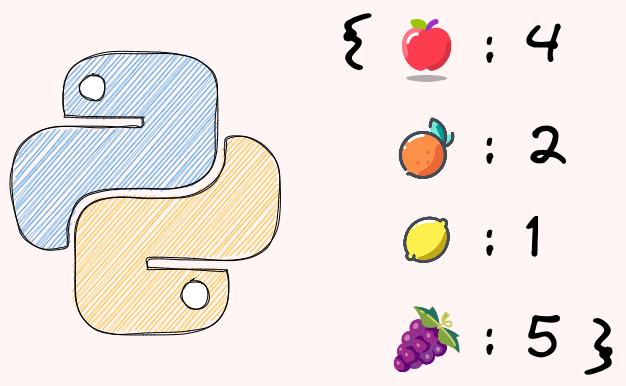

2.5. Dictionary#

2.5.1. Update a Dictionary With Items From Another Dictionary#
To update a dictionary with items from another dictionary, use the update method.
birth_year = {"Ben": 1997}
new_birth_year = {"Michael": 1993, 'Lauren': 1999}
birth_year.update(new_birth_year)
birth_year.update(Josh=1990, Olivia=1991)
birth_year
{'Ben': 1997, 'Michael': 1993, 'Lauren': 1999, 'Josh': 1990, 'Olivia': 1991}
2.5.2. Key Parameter in Max(): Find the Key with the Largest Value#
Applying the max method on a Python dictionary will return the max key.
birth_year = {"Ben": 1997, "Alex": 2000, "Oliver": 1995}
max(birth_year)
'Oliver'
To find the key with the max value instead, add key=dictionary.get to the max method.
max_val = max(birth_year, key=birth_year.get)
max_val
'Alex'
2.5.3. Stop Writing Nested if-else: Use Python’s .get() Instead#
When working with dictionaries in Python, it’s common to encounter situations where you need to access values that may or may not exist. The traditional approach of using multiple nested if-else statements can result in verbose, repetitive code that’s harder to maintain and more prone to errors.
Let’s consider an example where we have a dictionary user_data with keys “name”, “age”, and possibly “email”. We want to assign default values to these keys if they don’t exist.
# Checking dictionary values with multiple if-else
user_data = {"name": "Alice", "age": 30}
# Repetitive code with multiple default values
if "name" in user_data:
name = user_data["name"]
else:
name = "Unknown"
if "age" in user_data:
age = user_data["age"]
else:
age = 0
if "email" in user_data:
email = user_data["email"]
else:
email = "no-email@example.com"
print(f"{name=}")
print(f"{age=}")
print(f"{email=}")
name='Alice'
age=30
email='no-email@example.com'
As you can see, this approach is tedious and prone to errors.
With the .get() method, we can access dictionary values with default values in a single line of code. This approach is not only more concise but also more readable and maintainable.
# Using .get() method for cleaner code
user_data = {"name": "Alice", "age": 30}
name = user_data.get("name", "Unknown")
age = user_data.get("age", 0)
email = user_data.get("email", "no-email@example.com")
print(f"{name=}")
print(f"{age=}")
print(f"{email=}")
name='Alice'
age=30
email='no-email@example.com'
If you want to get the default value when a key doesn’t exist in a dictionary, use dict.get. In the code below, since there is no key meeting3, the default value online is returned.
2.5.4. Double dict.get: Get Values in a Nested Dictionary with Missing Keys#
Assume you have a dictionary of fruits with missing keys, and you want to extract the colors from it.
fruits = [
{"name": "apple", "attr": {"color": "red", "taste": "sweet"}},
{"name": "orange", "attr": {"taste": "sour"}},
{"name": "grape", "attr": {"color": "purple"}},
{"name": "banana"},
]
Using an if-else statement to handle missing keys can make the code lengthy and less readable.
colors = [
fruit["attr"]["color"]
if "attr" in fruit and "color" in fruit["attr"]
else "unknown"
for fruit in fruits
]
colors
['red', 'unknown', 'purple', 'unknown']
A better alternative is to use the get method twice.
colors = [fruit.get("attr", {}).get("color", "unknown") for fruit in fruits]
colors
['red', 'unknown', 'purple', 'unknown']
In the code above:
The first
getmethod will return an empty dictionary if the “attr” key is missingThe second
getmethod will returnunknownif either the “attr” key or the “color” key is missing.
2.5.5. dict.fromkeys: Get a Dictionary From a List and a Value#
To get a dictionary from a list and a value, use dict.fromkeys.
furnitures = ['bed', 'table', 'chair']
loc1 = 'IKEA'
furniture_loc = dict.fromkeys(furnitures, loc1)
furniture_loc
{'bed': 'IKEA', 'table': 'IKEA', 'chair': 'IKEA'}
2.5.6. Reverse a Dictionary with Dictionary Comprehension#
If you want to reverse a dictionary (turn keys into values and vice versa), use the combination of items and dictionary comprehension.
colors = {"apple": "red", "pepper": "green", "onion": "yellow"}
# Get a list of key and value pairs
colors.items()
dict_items([('apple', 'red'), ('pepper', 'green'), ('onion', 'yellow')])
# Switch keys and values by looping the list of key-value pairs
{v: k for k, v in colors.items()}
{'red': 'apple', 'green': 'pepper', 'yellow': 'onion'}
2.5.7. Merge Two Dictionaries Using the Union Operator in Python 3.9#
Before Python 3.9, there are two common ways to merge two dictionaries. The first way is to use the update method, but this approach modifies the original dictionary, which can lead to unexpected behavior.
birth_year = {"Ben": 1997}
new_birth_year = {"Michael": 1993, 'Lauren': 1999}
birth_year.update(new_birth_year)
birth_year
{'Ben': 1997, 'Michael': 1993, 'Lauren': 1999}
The second approach is to use **, but this approach makes the code less readable.
birth_year = {"Ben": 1997}
new_birth_year = {"Michael": 1993, 'Lauren': 1999}
{**birth_year, **new_birth_year}
{'Ben': 1997, 'Michael': 1993, 'Lauren': 1999}
In Python 3.9 and above, you can use the | operator to merge two dictionaries.
birth_year | new_birth_year
{'Ben': 1997, 'Michael': 1993, 'Lauren': 1999}
To update a dictionary in place, use the |= operator.
birth_year |= new_birth_year
birth_year
{'Ben': 1997, 'Michael': 1993, 'Lauren': 1999}
2.5.8. Iterable as a Key of a Dictionary#
Python dictionaries only accept hashable data types as a key in a dictionary. Using a list as a key will give a TypeError because it is not hashable.
price = {['apple', 'orange']: 2, 'banana': 1}
---------------------------------------------------------------------------
TypeError Traceback (most recent call last)
Cell In [1], line 1
----> 1 price = {['apple', 'orange']: 2, 'banana': 1}
TypeError: unhashable type: 'list'
If you want to use an iterable as a key of the dictionary, use a tuple instead. This works because tuples are immutable.
price = {('apple', 'orange'): 2, 'banana': 1}